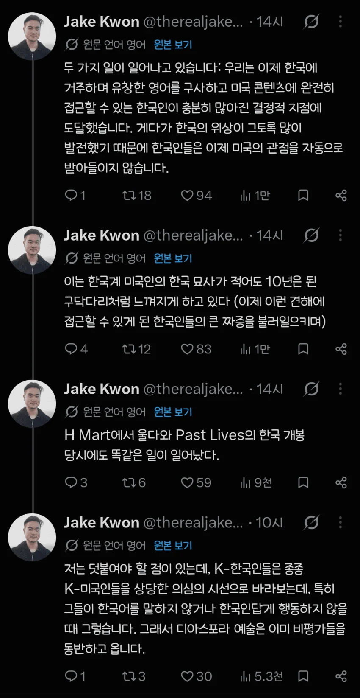
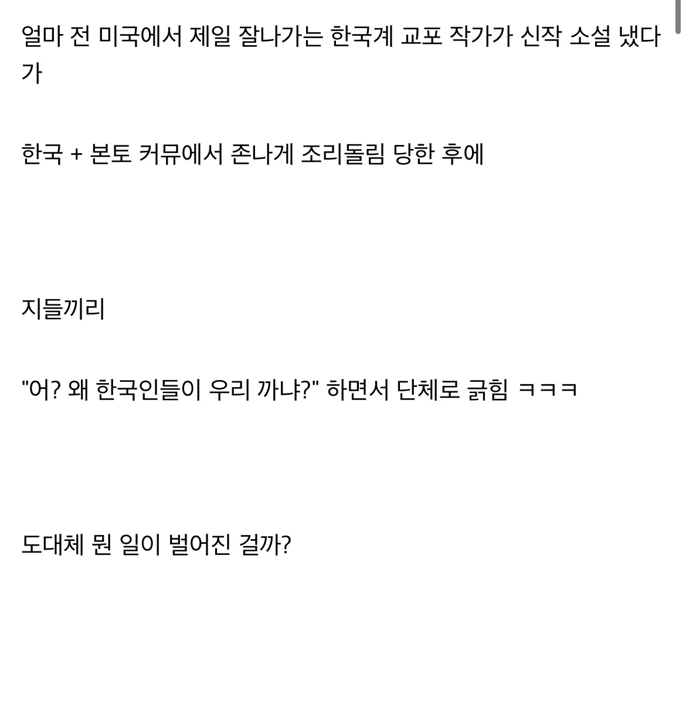
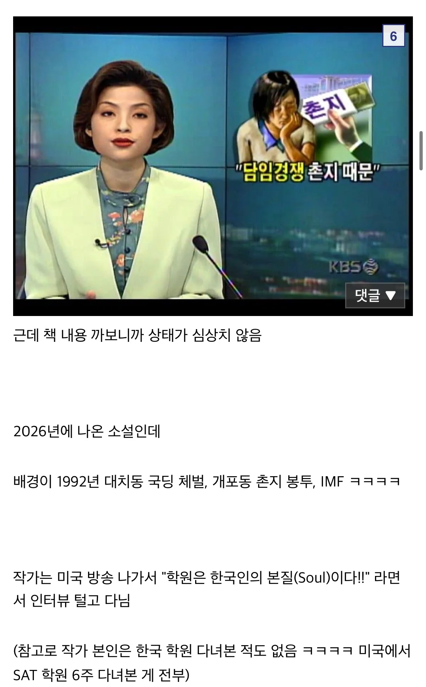
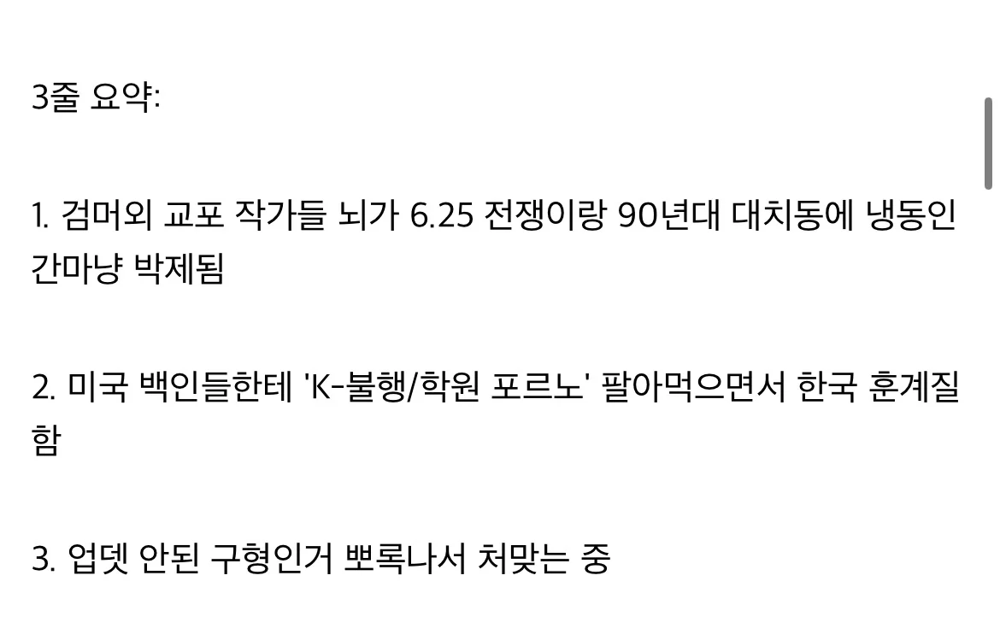

"학생은 AI 금지, 어른은 필수?"…이민진 작가 일침
"부정행위를 막으려고 실제로 휴대전화에 전국 재난 문자를 보내다니, 매우 흥미로웠다"
"공정성에 대한 애착이 너무 강해서, 공정성에 대한 실제적 요구와 AI의 발전·확산이 충돌하는 상황에서 우리가 어떻게 대응해야 할지 실시간으로 배우고 있기 때문"이라고 설명했다.
특히 그는 AI 사용을 둘러싼 교육계의 이중적 태도를 정면으로 짚었다. 학생들에게는 AI 활용을 금지하면서 정작 기업은 직원들에게 AI 역량을 요구하고 교사들 역시 AI를 사용하는 모순적 환경 탓에 학생들이 의문을 품고 있다는 것이다.









그래그래 느그들 흑인(사람취급안함)한테 목화솜 따게 하던 시절 이야기 꺼내면 게거품 물어대던데 어디 같이 과거로 가보자고